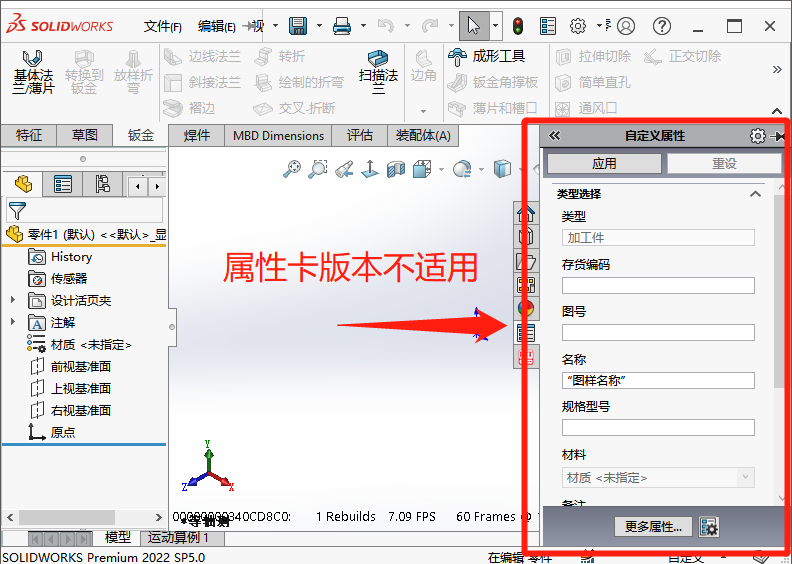
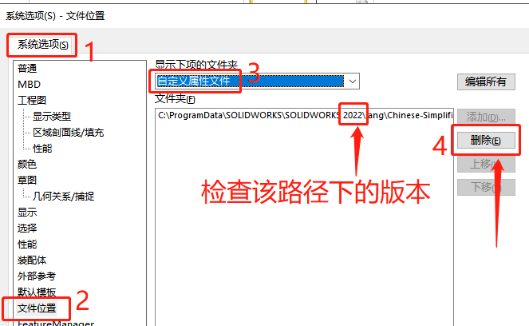

高版本属性卡不支持使用
正在打开的模板文件是在较新版本的属性卡中创建的。可能不支持所有新功能。
The template file being opened is created in a newer version of Propety TabBuilder. All the new features may not be supported.

方法：检查属性卡版本
问题多出现在多版本的时候，自定义属性文件的高版本不兼容造成。
我们需要找到【系统选项-文件位置-自定义属性文件】找到高版本属性卡的路径，选择删除即可。（或者换成当前版本的属性卡路径）
模板正常但弹窗
在装配体选择零部件时出现，似乎多出现在从高版本转低版本的SW文件（带属性卡的文件）。在激活这些零件时，程序就会弹窗提示。
方法：修改零件属性卡
这种问题零件可能占少数，如果有出现的话，我们在零件右侧【任务窗口-属性卡界面，选项，选择新属性卡】 应该就行的